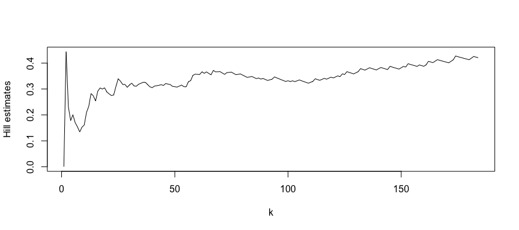

The package timeseriesExtremes aims to compile functions for assesing the time dependence of extremes.
You can install the package from github using
devtools::install_github('GBuritica/RPACKAGE/timeseriesExtremes')Please see below a classical data analysis using the timeseriesExtremes package.
library(timeseriesExtremes)
## basic example codeThe package includes the daily rainfall amounts data set of weather stations from nine different locations in France.
head(rainfall)
#> y.date BREST LANVEOC QUIMPER BORMES LE.LUC HYERES NANCY METZ ROVILLE SEASON
#> 1 19760101 0.3 0.4 2.1 0 0 0 2.3 4.9 5.0 WINTER
#> 2 19760102 0.1 0.0 0.2 0 0 0 1.4 2.1 9.0 WINTER
#> 3 19760103 0.0 0.1 0.0 0 0 0 1.8 0.8 2.4 WINTER
#> 4 19760104 1.7 1.0 1.4 0 0 0 0.0 0.0 0.0 WINTER
#> 5 19760105 0.0 0.0 0.0 0 0 0 0.7 0.5 0.9 WINTER
#> 6 19760106 0.0 0.0 0.0 0 0 0 0.6 1.3 1.7 WINTERFor example, the (tail) index Hill Plot of summer rainfall in Brest is ploted below.
